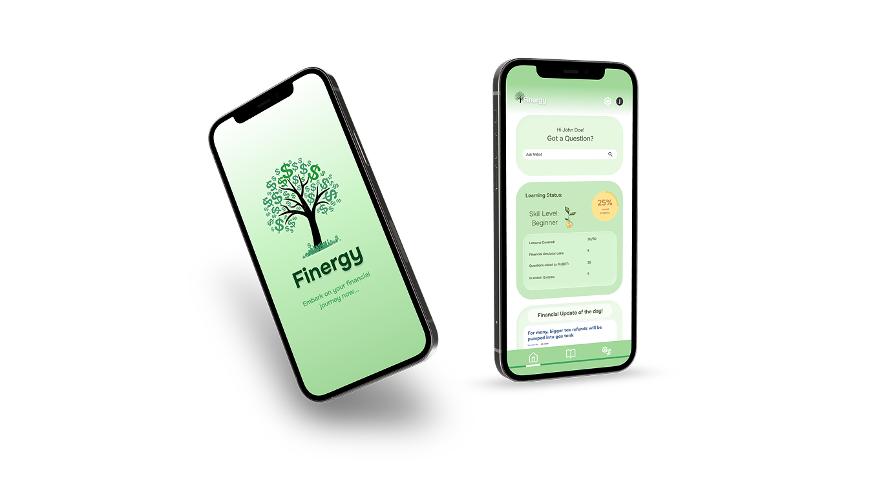
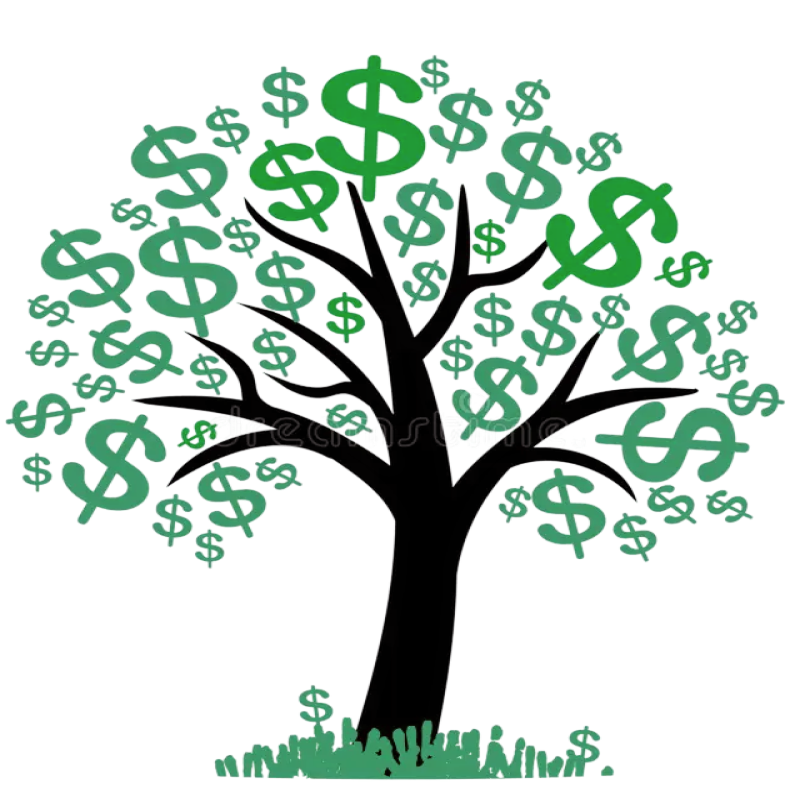

Finergy: A mindful financial literacy app aimed at young adults.
Background
The Problem:
of US college students report their current financial situation as “stressful”
Healthy Minds Survey (2018)- Young adults are suddenly responsible for managing money without prior experience
- They lack foundational financial knowledge
- This leads to confusion, poor decisions, and delayed action
The Consequences:
of Americans are financially illiterate
Financial Industry Regulatory Authority (FINRA)- Early financial mistakes compound over time
- Lack of knowledge limits long-term stability and confidence
- Financial literacy affects everyday decisions around saving, spending, and debt
The Solution

Finergy
A new take on financial literacy aimed specifically towards young adults.
User Research
*Click Diagram to Enlarge
We started by creating a mind map to establish an initial framework of what "financial security" realistically encompasses for young adults. We mapped out six primary domains—banking smartly, saving money, taxes, insurance, investing, and daily expenses—to brainstorm potential feature areas and anticipate user needs.
Before moving into user research, I ran a competitive analysis to evaluate existing financial apps like Greenlight, GoHenry, Wally, and Marcus Insights:
- This audit showed that current tools either cater strictly to minors, act as passive trackers without teaching fundamentals, or target established professionals and not college students.
- Mapping these shortcomings helped me pinpoint the exact structural and educational gaps and financial friction points college students actually face.
For our primary research, we conducted:
35 surveys
10 interviews
3 user groups
Key Questions:
- What financial knowledge and skills do young adults currently have, and where are the biggest gaps in their understanding?
- What challenges prevent young adults from learning and applying money-management skills in real life?
- What features, content formats, and learning styles would make a financial education application engaging, useful, and easy to use for young adults?
Interviews:
• P1-6: College Students, ages 18-22, target audience for this app.
• P7-8: Young Adults, ages 24-28, to understand financial situations of adults freshly out of college.
• P9-10: Older Adults, ages 45-60, to understand their financial growth and advice for emerging adults.
• For older participants, we focused on retrospective insights: when their deeper financial understanding clicked, how their definition of independence shifted over time, and their long-term strategies for investing, retirement security, and navigating complex systems.
*Click images to Enlarge
• For younger participants, we explored their earliest financial exposures through parents, current student budgeting habits, reliance on allowances or internship stipends, and the friction points of transitioning into managing money independently.
Key Insights:
Financial concepts feel abstract/hard to understand without real world application.
Most users rely on their parents to teach them financial information.
Financial behavior is often shaped by underlying emotions and lack of confidence.
Ideation & Low-Fi Wireframes
Based on our insights, we began to ideate and explore our key features and UI considerations by drawing out multiple low-fi wireframes:
- Money Tree analogy: Creating a calming branding that encourages growing your financial knowledge over time.
- On-boarding Quiz: Building an application page tailored to the user based on their current knowledge, interests, pain points and more.
- Financial Simulator: Real-world, engaging, and risk-free scenarios and results without fear of entering personal information.
- AI Chat-Bot: Conversational way to ask everyday money questions and receive immediate answers paired with in-app lessons, simulations, or next steps.
Click images to enlarge
User Flows & Architecture
Click images to enlarge
Once we aligned on our core features, I finalized our primary user flows to map out the entire app architecture from start to finish:
- Personalized onboarding quiz, dashboard navigation, gamified lessons, AI chatbot, and a financial simulator; all of these paths were strucutured to ensure users receive dynamic, actionable feedback.
Mid-Fidelity Wireframes
Click images to enlarge
Moving to mid-fidelity prototyping, we built out the structural backbone of Finergy to map out the complete user experience.
- Dashboard & Navigation Architecture: Structured the main home and lesson screens to cleanly display learning status, "Continue Learning" modules, tailored recommendations, and daily updates.
- Personalized Onboarding Flow: Designed a welcome sequence with an introductory questionnaire to evaluate the user's financial starting point and assign a tier like "Sprout”/beginner.
- Financial Simulator Layout: Prototyped the simulator interface to clearly present complex metrics, such as projected net worth, debt-free timelines, and savings rates, in an approachable, easy-to-digest format.
Usability Testing
After finalizing our mid-fidelity designs, we put the prototype directly into the hands of 5 participants within our target demographic to understand how intuitive were our workflows, hesitation points, and any moments of unclarity.
Key Changes:
De-cluttering the home page and upgrading navigation
- Reorganizing content into clean, digestible sections to reduce cognitive load.
- Replaced small, text-based navigation links with prominent, thumb-friendly icons in the bottom bar to improve touch targets, accessibility, and visual clarity.
Optimizing Learning Modules & Quizzes
- Prominent banner at the top of the page inviting users to take a quick quiz to reinforce their knowledge before diving into modules.
- Replaced small, text-based navigation links with prominent, thumb-friendly icons in the bottom bar to improve touch targets, accessibility, and visual clarity.
Adding dynamic controls & personalized feedback to the financial simulator
- Added intuitive sliders for annual income, savings, debt, and monthly expenses, allowing users to easily model and test different financial scenarios.
- Added a result analysis breakdown screen featuring numbered insights, milestone achievement badges, and targeted lesson recommendations.
Final Prototype
ONBOARDING
Structured, beginner-focused discovery quiz to assess financial comfort levels
Initial skill tier integrated directly into setup
Recognizable progress indicators for skill evaluation
Personalized learning paths and recommendations surfaced
HOME PAGE & AI CHATBOT
Simplified dashboard details with a cleaner visual hierarchy and reduced cognitive load
Made AI chatbot assistance immediately recognizable and accessible from the main view
Streamlined the transition from asking a question to receiving actionable guidance
Connected daily financial tips, learning status, and AI recommendations into one cohesive experience
LESSONS PAGE & GROWTH
Connected quick refresher quizzes directly to foundational learning modules
Plant-watering rewards integrated as a natural gamified incentive for progress
Familiar navigation patterns and clean category icons
Organized content into distinct "Continue learning" and sections for better scannability
FINANCIAL SIMULATOR
Connected interactive customization sliders directly to real-time financial calculations
Stress-free financial modeling without risking personal data
Dynamic input-to-result animations and visual feedback loops
Strengthened feedback for tested scenarios with clear breakdowns of success metrics
Clear communication of projected net worth, savings rates, and debt-free timelines
Key Takeaways
Research-Driven Decisions
- Conducting extensive exploratory research and user interviews before locking in a product direction gave us a solid, data-backed foundation for what to focus on.
- Later on, usability testing played a crucial role in validating our design decisions and ensuring we were solving the right problems.
Mastering UI/UX Design & Professional Growth
- Diving deep into Figma allowed me to master advanced prototyping, component structures, design systems, and more, and really solidified my interest in UI/UX design.
- Participating in design critiques, learning from more experienced designers, and presenting our research and design outcomes to cross-functional teams significantly sharpened my technical craftsmanship and presentation skills.
The Power of Intentional UI & Hierarchy
- This project highlighted how critical deliberate UI considerations are in product design.
- Thoughtful choices around color palettes, typography, and visual hierarchy make a massive difference in reducing cognitive load and turning a complex financial tool into an approachable experience.
Focusing on Core Features for Clear Impact
- While we brainstormed and scoped numerous ideas,focusing our deep prototyping efforts on Finergy's core pillars was essential.
- We had numerous secondary features within the app itself such as newsletters, user profiles, and settings that weren't fully prototyped, but our laser focus ensured the primary concept of the app was communicated clearly without overwhelming users,
Final Reflection
Click images to enlarge
Working on Finergy has been an incredible journey in bridging the gap between complex financial systems and accessible, empowering design for students and young adults.
As someone navigating these exact life transitions myself, building a product that combats information overwhelm and replaces financial anxiety with clarity was an immense challenge, but one that was deeply rewarding.
This project both sharpened my technical execution in Figma and user research methodologies and reinforced my belief that design can be a powerful tool for real-world education and financial wellness.
After this project, I could confidently say I am passionate about UX and product design, and I am beyond more than excited to continue applying human-centered design principles to solve everyday friction points and build products that genuinely make people's lives easier.
thank you for your time!